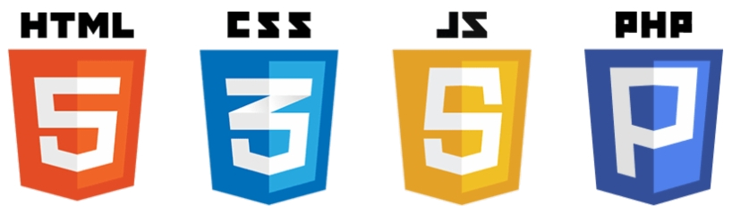

L'offre Silver comporte:
De 6 à 15 pages web
Un design attractif et responsif
Durée de conception : 10 jours hors weekend
Compatibilité smartphone (votre site sera bien présenté sur les smartphones)
Possibilité d'interrogation de base de données avec l'installation de phpmyadmin
Interface utilisateur au point pour répondre aux demandes du visiteur
Un système de paiement
Page administrateur avec des statistiques (trafic, CA, nombre de visites, paiements effectués...)

Note:
Cette offre est l'offre idéale pour les blogs amateurs.
Création d'Aurélien Marc et de Slimane Berrada
IUT de Vélizy DUT INFO première année
Promo 2019/2020